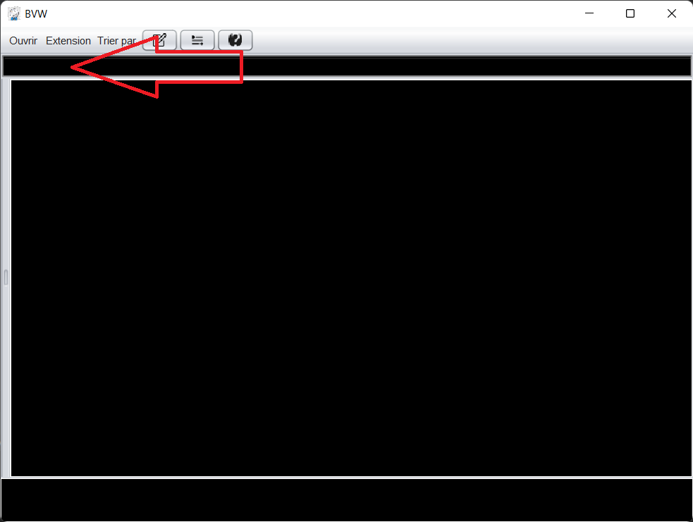

Il faut tout d'abord ouvrir le dossier :
Vous choisissez le dossier que vous voulez et vous validez

Vous n'avez rien c'est normal qui faut que vous alliez dans la barre de recherche
vous clickez ici et vous appuyez sur votre touche supprimer ou le nom du titre que vous voulez
lorsque vous avez fait ça vous aller avoir ceci :

Tout d'abord vous allez afficher les metadata en faisant un click gauche pour obtenir ceci :
Vous avez juste à faire un click droit et appuyez sur ouvrir
Et voila vous avez réussi à faire lancer votre vidéo